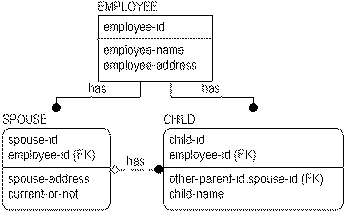
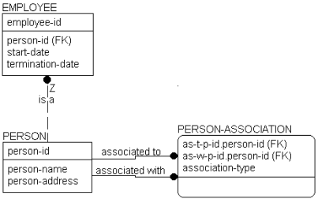
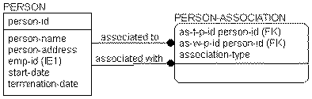

From a formal normalization perspective (what an algorithm would find solely from the shape of the model, without understanding the meanings of the entities and attributes) there is nothing wrong with the EMPLOYEE-CHILD-SPOUSE model. However, just because it is normalized does not mean that the model is complete or correct. It still may not be able to store all of the information that is needed or it may store the information inefficiently. With experience, you can learn to detect and remove additional design flaws even after the pure normalization is finished.
Using the following EMPLOYEE-CHILD-SPOUSE model example, you see that there is no way of recording a CHILD whose parents are both EMPLOYEEs. Therefore, you can make additional changes to try to accommodate this type of data.

If you noticed that EMPLOYEE, SPOUSE, and CHILD all represent instances of people, you may want to try to combine the information into a single table that represents facts about people and one that represents facts about relationships. To fix the model, you can eliminate CHILD and SPOUSE, replacing them with PERSON and PERSON-ASSOCIATION. This lets you record parentage and marriage through the relationships between two PERSONs captured in the PERSON-ASSOCIATION entity.

In this structure, you can finally record any number of relationships between two PERSONs, as well as a number of relationships you could not previously record in the first model, such as adoption. The new structure automatically covers it. To represent adoption you can add a new value to the “person-association-type” validation rule to represent adopted parentage. You can also add legal guardian, significant other, or other relationships between two PERSONs later, if needed.
EMPLOYEE remains an independent entity, since the business chooses to identify EMPLOYEEs differently from PERSONs. However, EMPLOYEE inherits the properties of PERSON by virtue of the is a relationship back to PERSON. Notice the Z on that relationship and the absence of a diamond. This is a one‑to‑zero or one relationship that can sometimes be used in place of a subtype when the subtype entities require different keys. In this example, a PERSON either is an EMPLOYEE or is not an EMPLOYEE.
If you wanted to use the same key for both PERSON and EMPLOYEE, you can encase the EMPLOYEE entity into PERSON and allowed its attributes to be NULL whenever the PERSON is not an EMPLOYEE. You still can specify that the business wanted to look up employees by a separate identifier, but the business statements would be a bit different. This structure is shown in the following figure:

This means that a model may normalize, but still may not be a correct representation of the business. Formal normalization is important. Verifying that the model means something, perhaps with sets of sample instance tables as done here, is no less important.